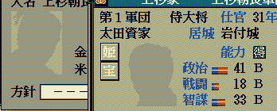

こでは、8色の顔グラのパック化されたデータである「Kaoswap.N6P」の内容を継承して、
TSModの拡張機能を利用した場合に利用可能な1932人用の「KaoswapEX.N6P」や
2932人用の「KaoswapUX.N6P」への変換ツール、及び、その方法の解説となります。
※1332人用のKAOSWAP.N6Pのカスタマイズされた顔情報をそのまま引き継いで、1932人用のKAOSWAPEX.N6Pを作成するツール
ファイルを解凍すると、
・KaoswapEXMaker.exe (実行ファイル)
・KaoswapEXMaker.dat2
の２つのファイルがあります。
２つとも｢ターゲットとなるKaoswap.N6Pと同じフォルダ｣にコピーして下さい。
KaoswapEXMaker.exe を 実行します。
黒画面に文字がほにょほにょと出て、1度何かキーボードを押すと、｢KaoswapEX.N6P｣が出来上がります。
これを｢必要な場所に移動させる｣なりして使用して下さい。
(※そのままディレクトリ内にKaoswapEX.N6Pを置いておくと、TSMod.dllは該当の天翔記を1932人モードとして解釈しますので、そのディレクトリに不要な場合はKaoswapEX.N6Pを削除するか、移動するようにしましょう。)
(※ 1333人目～1932人目までの武将にはデフォルトでテンプレート的なシルエット画像が自動で当てられます。以下は自動で付けられるシルエットの顔画像)

このKaoswapEX.N6Pへの減色顔の取り込みは、「KaoSwapFaceImporter」にて行います。
※1332人用のKAOSWAP.N6Pのカスタマイズされた顔情報をそのまま引き継いで、2932人用のKAOSWAPUX.N6Pを作成するツール
ファイルを解凍すると、
・KaoswapUXMaker.exe (実行ファイル)
・KaoswapUXMaker.dat2
の２つのファイルがあります。
２つとも｢ターゲットとなるKaoswap.N6Pと同じフォルダ｣にコピーして下さい。
KaoswapUXMaker.exe を 実行します。
黒画面に文字がほにょほにょと出て、1度何かキーボードを押すと、｢KaoswapUX.N6P｣が出来上がります。
これを｢必要な場所に移動させる｣なりして使用して下さい。
(※そのままディレクトリ内にKaoswapUX.N6Pを置いておくと、TSMod.dllは該当の天翔記を2932人モードとして解釈しますので、そのディレクトリに不要な場合はKaoswapUX.N6Pを削除するか、移動するようにしましょう。)
(※ 1333人目～2932人目までの武将にはデフォルトでテンプレート的なシルエット画像が自動で当てられます。以下は自動で付けられるシルエットの顔画像)
(2001.bmp～2031.bmp の範囲は、商人等のフルカラー顔グラフィックとして予約されているため、武将の顔としては利用するべきではありません。)
このKaoswapUX.N6Pへの減色顔の取り込みは、「KaoSwapFaceImporter」にて行います。